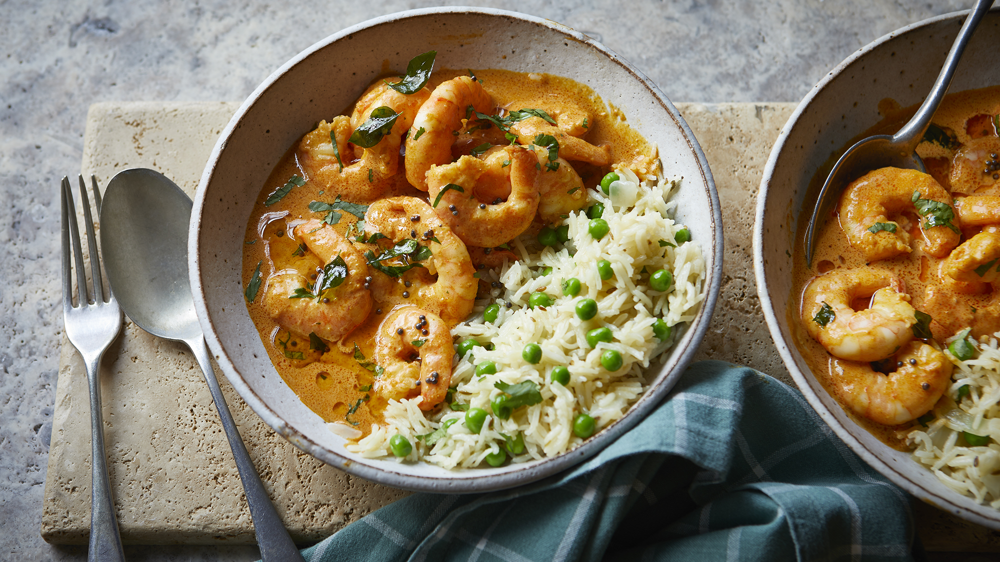

Prawn Curry

Description
Indian prawn curry. Unbelievably easy to make and lip-smacking, this prawn curry is one of my all-time favorites. The aromatic spices give it a wonderful flavor, and the prawns are cooked to perfection in the delicious sauce. Spoon this fragrant curry over a bed of fluffy rice or pair it with your favorite classic flatbread for an effortless meal that’s made for cooler months.
Ingredients
- 1 clove of garlic
- 1 red onion
- 7 cm piece of ginger
- 1 fresh green chilli
- 200 g ripe tomatoes
- 175 g basmati rice
- vegetable oil
- 1 teaspoon black mustard seeds
- 1½ teaspoons garam masala
- ¾ teaspoon ground turmeric
- 120 g large raw peeled tiger prawns , from sustainable sources
- ½ x 400 g tin of light coconut milk
- 125 g baby spinach
- 1 lime
Steps
- Fill a medium pan with salted water, place over a high heat and bring to a boil.
- Peel and finely slice the garlic and onion, then peel and finely grate the ginger. Halve and deseed the chilli, then finely slice. Roughly chop the tomatoes.
- Add the rice to the boiling water and cook for 10 minutes, or until tender. Drain in a sieve, then return to the warm pan, cover with a lid and set aside off the heat.
- Heat 2 tablespoons of oil in a medium pan over a medium heat, add the mustard seeds, garam masala and turmeric, then fry for 1 minute.
- Add the onion, garlic and ginger, then fry for 10 minutes, or until softened. Add the chilli, tomatoes and a splash of water, then turn the heat up and cook for a further 3 minutes.
- Next, add the prawns and coconut milk, bring to the boil then reduce the heat slightly and simmer gently for 3 to 4 minutes, or until the prawns are just cooked.
- Stir through the spinach and cook for a further 1 to 2 minutes until the spinach has wilted.
- Divide the rice between plates. Season the prawn curry to taste with salt, black pepper and a squeeze of lime juice, then ladle the curry onto the rice. Serve with the remaining lime, cut into wedges for squeezing over.
Homepage